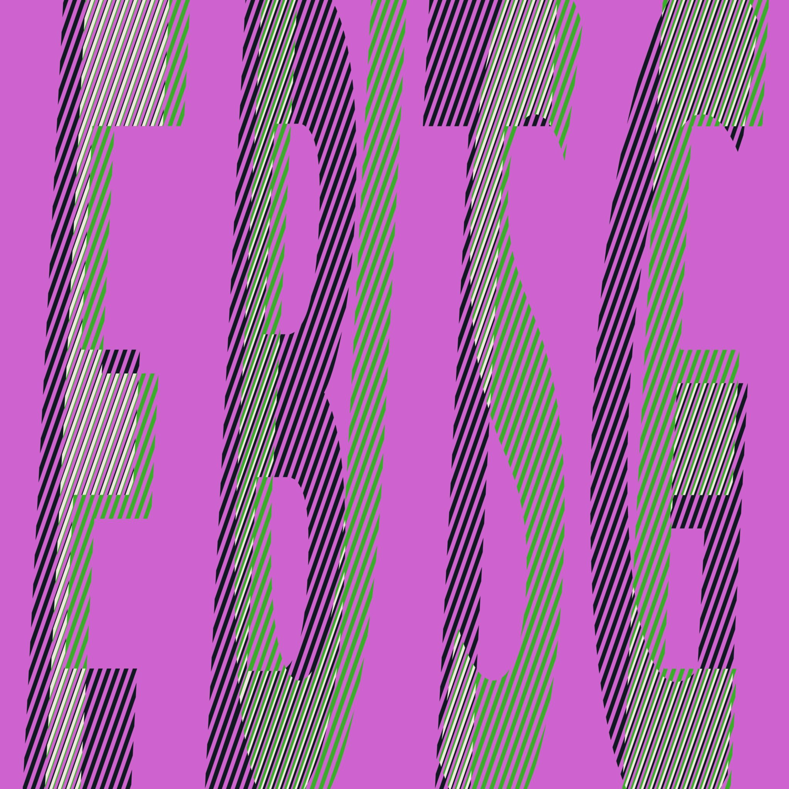

Posted on 2023-12-24 · 3 min read · Album Digest · Music · Twenty Three · Albums · EBTG · Electronic
As you get older nostalgia becomes an ever important part of listening to music.  Cover of Fuse by Everything But The Girl It often feels like the business relies on convincing an aging population of fans to part with their money on new versions of old material. It’s nostalgia, the feeling of recapturing something you loved in your youth, that often makes this acceptable. Of course it’s also nice to get new music from your favourite bands, especially when it’s as good as “Fuse”.
The album’s announcement came early in 2023 but with a surprisingly short lead time all things considered. I guess it being a rather straightforward album of songs meant that it could be pushed out with a minimum of fuss. But of course the bigger surprise about Fuse as an album is that it is so good. It’s not the sound of a band turning in warmed-up demos or ploughing nostalgia, instead it’s a solid collection of new songs that expands their existing material. There are echoes of past songs but with the added perspective of additional life lived.
Everything But The Girl’s previous album was “Temperamental”, a polished but slightly distant collection of songs, and very much the kind of album you’d expect a career to fizzle out on. From the very next best of onwards, it seemed like EBTG were done as a going concern. However, in the intervening years both Tracy and Ben have both made great solo albums. In 2022, I read Tracy’s excellent memoir of her friendship with Lindsay from the Go-Betweens and felt no pangs for more Everything But The Girl songs, even if the aforementioned nostalgia did send me back to their old ones.
The brilliant thing about the lead single “Nothing Left To Lose” (apart from the title of course) is just the way it wub-wub-wubbed out of the speakers like they had never been away. It was like I’d slipped into a part of the multiverse where they’d just kept putting out records, always refining their sound to the taste du jour.
The next single “Caution To The Wind” repeated that same trick: a smart dance single with a head-nodding beat, tracing out the arc of older people giving relationships (or parties, or both) another go. This one was more like the songs on “Temperamental” but it was very catchy (and there are some nice remixes too).
The final single was “Run A Red Light”, which was a story ballad more akin to songs on “Acoustic Heart” and earlier albums. But like so much of the rest of the album, both the arrangement and the story of the song are delivered so confidently that it drew me in again and again on repeated listens. Other highlights include “Forever” and “Karaoke”.
Finally, I just want to take a moment to appreciate the artwork. I bought a copy on translucent green vinyl (which is gorgeous) and therefore got the artwork full size. It’s a really clever use of angled lines in different colours allowing titles from the tracklist to be overlaid with the side 1 and side 2 labels. The same thing happens on the cover with EBTG and FUSE. It’s simple but adroitly executed, stylish but not too flashy. Just like the album that it represents.